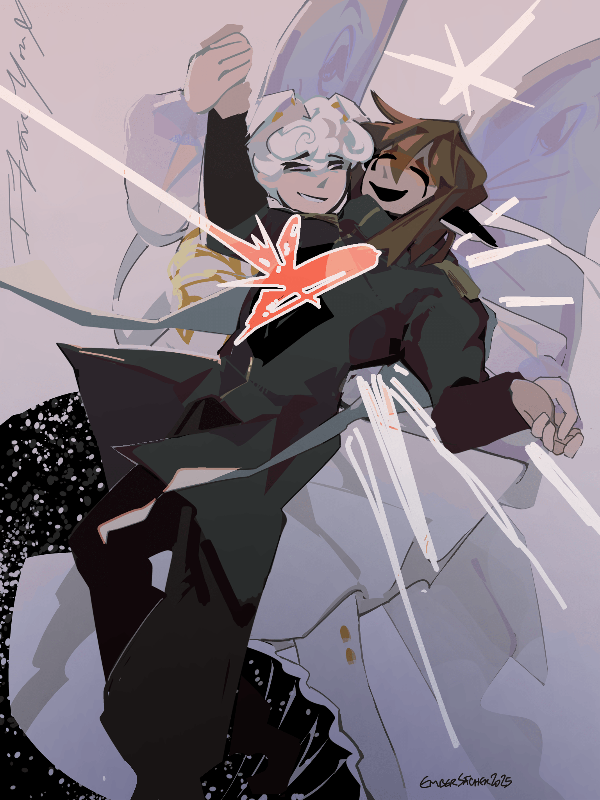
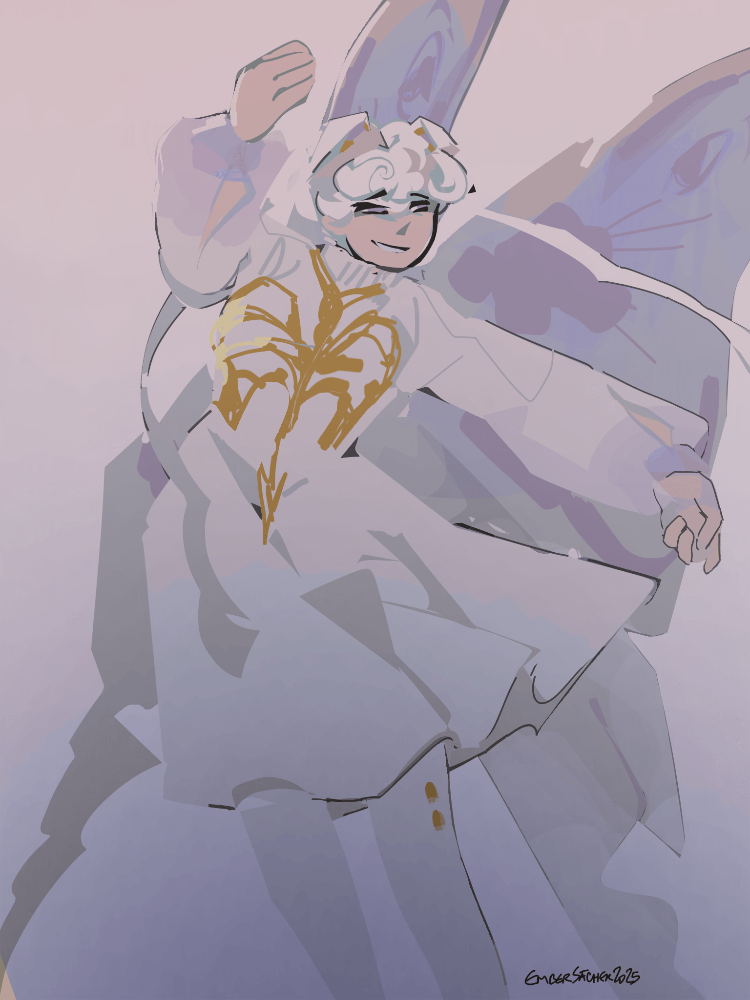
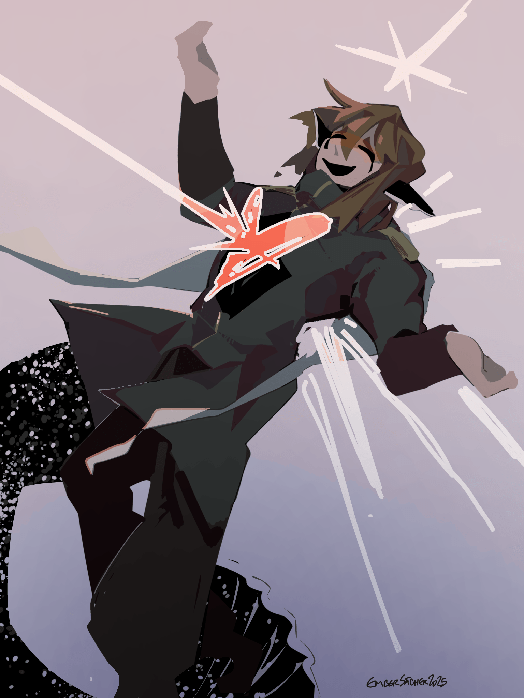

!!!valentines!!!
creation date: feb 23
characters featured: lyre, archer
suffering so bad. this was supposed to be done for valentine’s day but the pose was so hard to do that was stuck with it for a week on and off. this drawing has done to me the opposite of what it preaches, i feel no love i want to go back to painting bc cel shading this killed my soul. the art itself looks good i tghink but it was not worth it bro it was nawttttt
i was meant to create an alternative illust to go with this one where archer was the one dipping lyre but as you may recall, i did not like cel shading it and thus the concept was set aside.
the pose is a lil iffy as well, i moved lyre's arm from being underneath to being over archer multiple times, i couldn't figure out which way to make it make sense. i still don't think it does tbf, at least it looks pretty.
here are two of them isolated

sometimes when i'm browsing art social media, i'll come across posts labeled "skeb" or "sketch" which i'll open and then laugh to myself about, cuz my finished illusts are many peoples' sketch. pain of the process aside, i like how this illust looks.